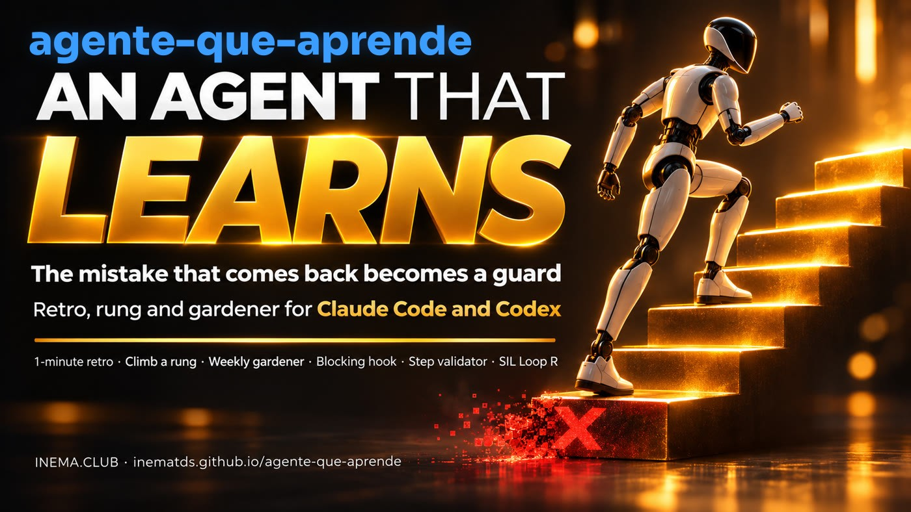

Your agent makes a mistake, you correct it, and tomorrow it makes the same one again. This kit finds where you corrected the agent, finds the mistake that keeps recurring — even in another project — and turns the lesson into a hook, validator, or test the model can't skip.

agente-que-aprende is a kit of four Python scripts for people who work with AI coding agents such as Claude Code and Codex. It reads your sessions and the files where you record failures and lessons (FALHAS.md, LESSONS.md), shows where you corrected the agent and which mistakes keep coming back, and helps turn each lesson into an automatic guard instead of yet another written rule. It needs only Python 3; it uses no internet or API, and no rule is adopted without your decision.
A written rule is the weakest correction: the model can skip it. The order of strength is architecture (the mistake becomes impossible) > hook/validator (blocks it) > test (catches it) > checklist > prose.
retro.py reads the session and lists every time you corrected the agent and every tool error that repeated, with the suggested rung. It runs on its own when the session closes.
degrau.py and jardineiro.py read FALHAS and LESSONS, group the same mistake written in different ways, and show what is still only prose and keeps recurring.
gancho.py is a Claude Code hook: each lesson becomes a line in ganchos.json, and the command that already went wrong is blocked, with the explanation sent back to the agent. It works in Claude Code; in Codex, the retro and the gardener already work, the hook doesn't yet.
The agent runs, gets feedback, the feedback is checked, you approve, and the lesson lands where the next run can't ignore it.
1 protections (tests, types, lint) · 2 skills · 3 memory · 4 impossible mistake · 5 automation · 6 self-improvement. The top is the last rung: without the ones below, there's nothing to learn from. The ladder is the team's path; the order of strength (architecture > hook > test > checklist > prose) applies to each lesson.
The current rung and the suggestion come from signal words in aprende/comum.py ("ausente/pulou" (missing/skipped) → architecture; "conferir antes" (check first) → validator; dangerous command → hook). The words and reports are in Portuguese (with some English); you adjust the list and decide.
SIL Loop R is another open project: a local notebook (SQLite) of incidents and lessons, where nothing becomes a rule without a human decision. With --sil <projeto>, each kit proposal goes in there as an incident + proposed lesson. It's optional.
No dependencies, no keys, no network calls. SIL Loop R is optional.
Standard library only.
# check python3 --version
Files with these names: FALHAS.md (table: date | what broke | smallest fix | prompt/infra), LICOES.md (3-column table) and/or LESSONS.md (list "- rule (date)"). Each table row starts with the date (YYYY-MM-DD or dd/mm).
# example row
| 2026-11-06 | render caiu: template ausente | rodar o passo antes | prompt |Claude Code (for the hooks), systemd (weekly timer), and SIL Loop R (to receive the proposals). The kit looks for SIL in ~/projetos/sil-loop-r/, on the PATH (sil), or in AQA_SIL.
git clone https://github.com/inematds/sil-loop-r.git ~/projetos/sil-loop-r python3 ~/projetos/sil-loop-r/sil.py --project ~/projetos/meu-app init
Each step uses the repository's commands. The tests use fictional data and run without a network.
The 10 tests check table parsing, the retro, the hook, and the SIL integration.
git clone https://github.com/inematds/agente-que-aprende.git && cd agente-que-aprende python3 -m unittest discover -s tests -v # OK
Reads the project's failures and lessons and lists what keeps recurring and is still only prose, with the suggested rung and the source lines.
python3 degrau.py tests/dados/FALHAS.md # demo with the repo's data python3 degrau.py ~/projetos/meu-app/FALHAS.md ~/projetos/meu-app/LESSONS.md --top 10
Measures recurrence (how much of the record is the same mistake again), shows the mistakes that "moved house," and the overall ranking.
python3 jardineiro.py --raiz tests # demo python3 jardineiro.py --raiz ~/projetos --saida jardim/$(date +%F).md
Point it at the session file (the most recent ones: ls -t ~/.claude/projects/*/*.jsonl | head -3). --pergunta appends the retro prompt to paste into the agent ("what went wrong here?").
python3 retro.py tests/dados/sessao.jsonl --pergunta # demo python3 retro.py ~/.claude/projects/<pasta>/<id>.jsonl --pergunta python3 retro.py ~/.codex/sessions/<aaaa/mm/dd>/rollout-<…>.jsonl # Codex too
One more item in the ganchos.json list (comma-separated): the pattern of the wrong command, the exception (optional), the message, and where the lesson came from. The kit already ships with a universal guard (pkill-f); more examples in modelos/ganchos-exemplo.json. To leave the kit's file untouched, use your own file via AQA_GANCHOS=/caminho/meus.json. Test before turning on step 6: the hook ignores what's inside quotes and inside a heredoc, so quoting the command in a text, a commit, or a grep isn't blocked.
{"id": "pkill-f", "ferramenta": "Bash", "padrao": "\\bpkill\\b[^|;&]*\\s-f\\b",
"mensagem": "Liste com pgrep -af e mate por PID em outro comando.", "origem": "FALHAS (7x)"}
echo '{"tool_name":"Bash","tool_input":{"command":"pkill -f x"}}' | python3 gancho.py; echo $? # 2 = blocked
In ~/.claude/settings.json: the hook before every Bash command and the retro when the session closes (reports in ~/.local/share/agente-que-aprende/retro/, only when there was a correction or a repeated error).
"hooks": {
"PreToolUse": [{"matcher": "Bash", "hooks": [{"type": "command", "command": "python3 /caminho/agente-que-aprende/gancho.py"}]}],
"SessionEnd": [{"hooks": [{"type": "command", "command": "bash /caminho/agente-que-aprende/hooks/fim-de-sessao.sh"}]}]
}
Copy the timer and, in jardineiro.service, change KIT (where the kit lives), SAIDA (where to save the reports), and the --raiz %h/projetos (where your projects live). Every Monday at 07:30 a new report comes out.
cp modelos/systemd/jardineiro.{service,timer} ~/.config/systemd/user/ systemctl --user daemon-reload && systemctl --user enable --now jardineiro.timer
With SIL installed and initialized in the project (see Prerequisites), the top 5 candidates become an incident + proposed lesson in SIL Loop R (retro.py also accepts --sil). Nothing is adopted without you.
python3 jardineiro.py --raiz ~/projetos --sil ~/projetos/meu-app AQA_SIL=/outro/lugar/sil.py python3 retro.py sessao.jsonl --sil ~/projetos/meu-app # SIL outside ~/projetos
Run on INEMA's real records on Nov 7, 2026: 196 failure and lesson files, 1,880 records, in under 1 second.
180 records in 84 repetition groups; 57 groups cross projects — the mistake just moved house.
Killing a process by pattern killed the shell itself. Each time it became a line of prose. Now it's the pkill-f hook: the command is blocked on the spot, with the right way in the message.
The render failed because an earlier step didn't run. The kit's suggestion: architecture — the chain generates what's missing (modelos/validador-passo.sh).
# excerpt from the gardener report
- 196 arquivos em 190 projetos · 1880 registros
- reincidência: 10% (180 registros em 84 grupos de 2+)
1. pkill -f "<padrão>" no mesmo comando matou o próprio shell — 7× em 6 projetos · texto → gancho/validador
4. produce_blocks caiu (templates/pt/scene-01.html ausente) — 4× · texto → servidor/arquitetura
There's only one measure: weekly recurrence has to go down.